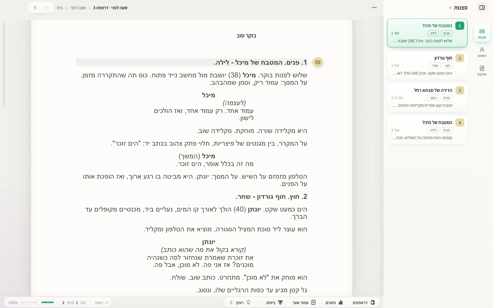
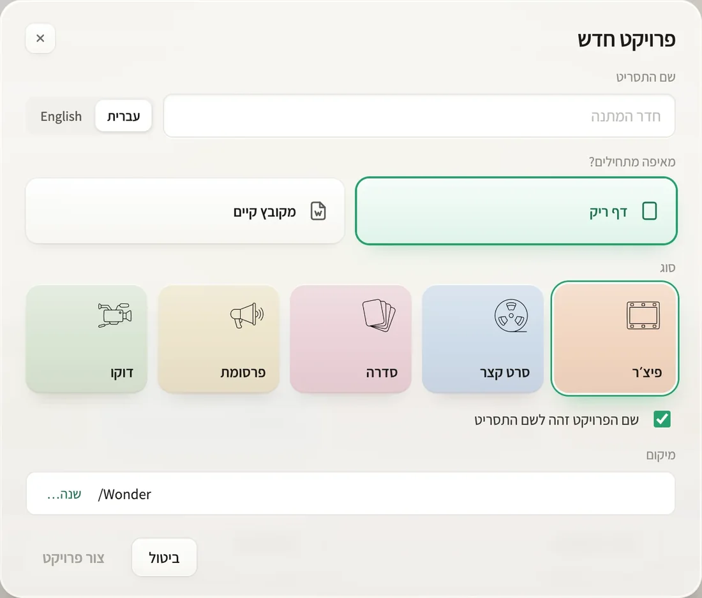
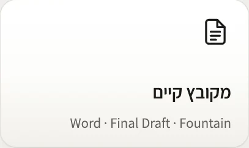
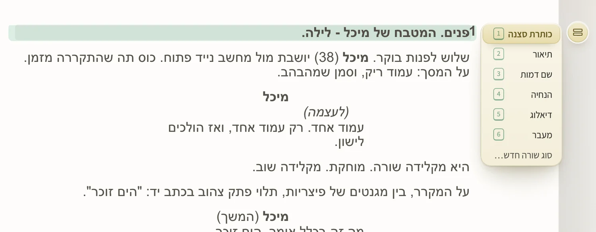
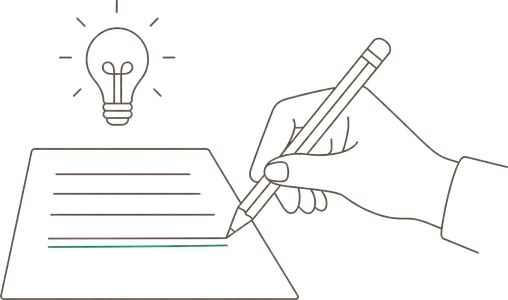
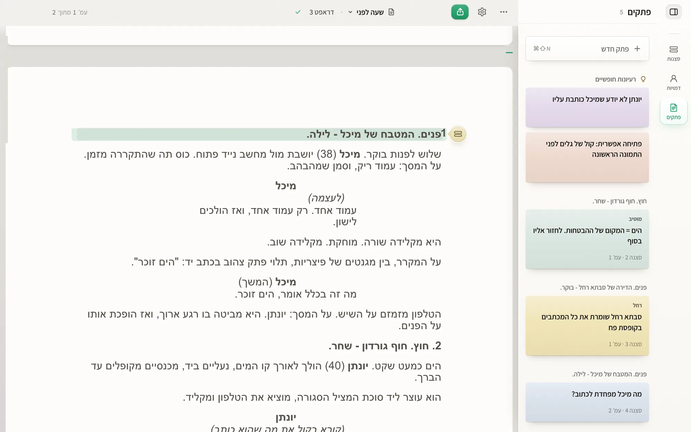
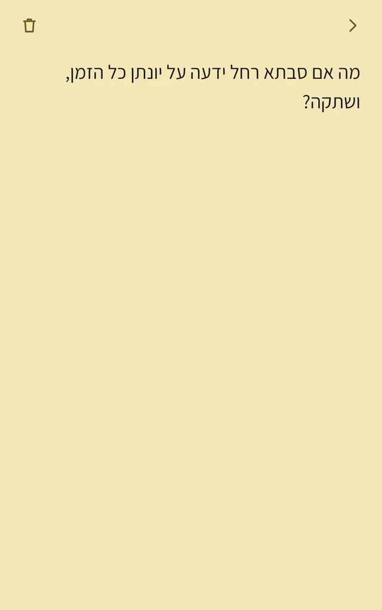
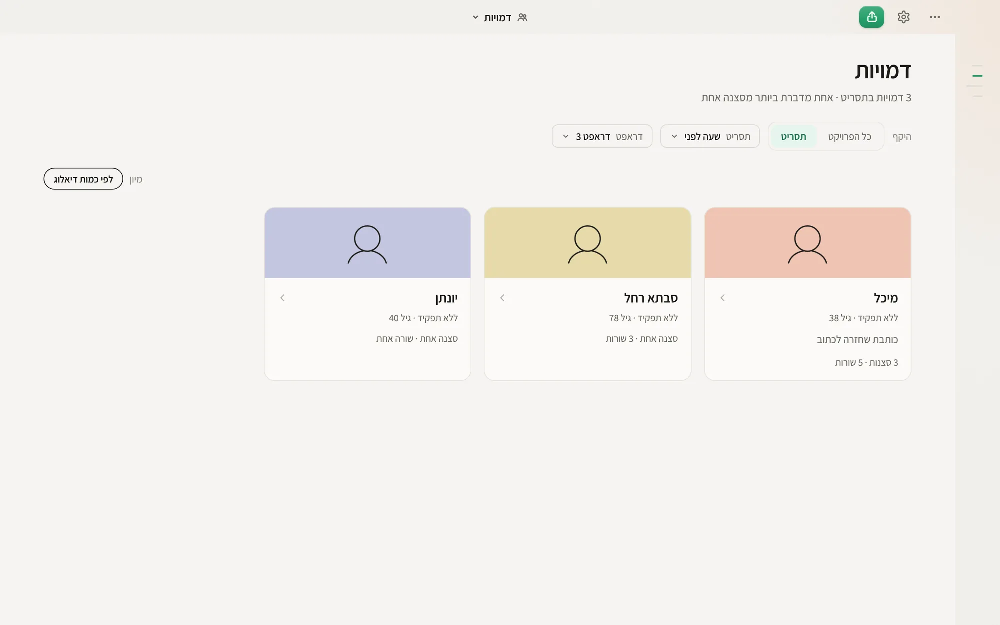
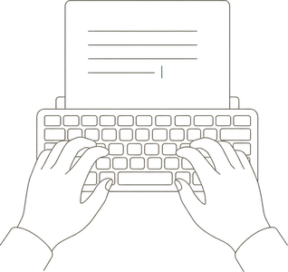
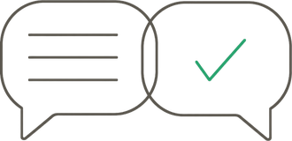

עברית קודם כול
מימין לשמאל בכל מסך, מספרים שלא מתהפכים, ובדיקת איות.
חינם בתקופת הבטא. ההצטרפות בהזמנה. איך מתקינים
מקום שקט לכתוב בו תסריט.
תוכנת תסריטאות שנכתבה על ידי תסריטאים. התסריט מ־Word בא איתך, והעמוד נראה כמו שהתעשייה מצפה.

עוברים בלי לאבד כלום
מה שכתבתם בא איתכם, ומה שהידיים רגילות אליו ממשיך לעבוד.
גוררים את הקובץ פנימה, והתוכנה מזהה לבד כותרת סצנה, דמות ודיאלוג.


אותם כללים, בתוכנה שנבנתה מהיסוד לעברית.


מבלגן לסדר
לכל רעיון יש מקום, בלי לצאת מהשורה שאתם כותבים.


סרגל אחד בצד התסריט. הוא נפתח ונסגר בלי שעוזבים את השורה שכותבים.
קיצור מקלדת פותח שורה לרעיון. Enter, והסמן חוזר בדיוק למקום שבו עצרתם.
מעל הפתק כתובה הסצנה שלו, ובתחתיתו מספר הסצנה והעמוד. לחיצה עליו מחזירה לשם.
רעיון שעוד לא שייך לשום סצנה מחכה למעלה, עד שתמצאו לו מקום.
דף אחד בטלפון, שכולו מקום לכתוב. מחברים פעם אחת בסריקת קוד, בלי חשבון ובלי חנות. הרעיון נשלח גם אם לא הייתה קליטה, ומחכה ברעיונות החופשיים.
קיצור אחד פותח שורה לרעיון. Enter, והסמן חוזר למקומו.
לחיצה על הפתק מחזירה לסצנה ולשורה שבהן נכתב.
כשהדמות או המקום שבו מגיעים לסצנה, הוא מופיע בשקט בשוליים.
לפני הכתיבה, ותוך כדי
לוח הביטים ודפי הדמויות יושבים באותו קובץ, במרחק לחיצה מהעמוד.
מסך מלא לבנות בו את הסיפור, לפני שכותבים סצנה ותוך כדי.
הסרגל מראה את האורך שתכננתם. לחיצה על ״יעד״ משנה אותו, והלוח כולו מתיישר.
רואים כמה עמודים תופסת כל מערכה, ואיפה יושב כל ביט בתוכה.
כותרת, שורה אחת על מה שקורה, וטווח העמודים שלו. הצבע אומר לאיזה קו הוא שייך.
ביט שנולד מביט אחר מחובר אליו בקו, וכך רואים את השרשרת של הסיפור.
כפתור אחד מוסיף כרטיס. גוררים אותו למקום, והסרגל מתעדכן.

לכל דמות כרטיס בצבע שלה, ועליו בכמה סצנות היא מופיעה וכמה שורות יש לה.
בסדרה, אותן דמויות מלוות את כל הפרקים. בוחרים מה רואים.
הוא מתחיל מהבסיס: דיוקן, שם ומשפט אחד שאומר מי היא.
ראשי, משני, אנטגוניסט. התפקיד קובע איפה הדמות עומדת ברשימה.
רצון, פחד, קול. כל חלק הוא כמה שורות חופשיות, ואפשר לשנות לו את השם.
מראה, פצע, מסע, קשרים. חלק שלא צריך פשוט לא נמצא על הדף.

מימין לשמאל בכל מסך, מספרים שלא מתהפכים, ובדיקת איות.
העמוד נשבר נכון, ומה שרואים על המסך הוא מה שיודפס.
ייצוא לשליחה, עם עמוד שער ומספרי סצנות.
תסריט קיים נכנס בגרירה אחת. מה שלא ברור מסומן, לא נמחק.
לפני הגרסה בתשלום תהיה תקופת ניסיון, ונודיע מראש.

וונדר חתומה ומאושרת על ידי Apple, ולכן לא אמורה להופיע שום אזהרה:
אם בכל זאת מופיעה הודעה, כתבו לנו ונעזור.
גרסת ה־Windows מגיעה דרך חנות Microsoft Store: התקנה בלחיצה אחת, כמו כל אפליקציה אחרת מהחנות.
אחרי ההרשמה מגיעים לעמוד ההורדה, ושם כפתור אחד פותח את וונדר בחנות. לוחצים על "התקנה" ופותחים אותה מתפריט התחל.
התסריטים נשמרים אצלך במחשב, בתיקייה שבחרת, ואין צורך בחשבון או בהתחברות. תסריט יוצא מהמחשב רק כשאתה בוחר בכך במפורש, למשל כששולחים אותו לקריאה או מבקשים תרגום.
פעם ביום התוכנה בודקת אם יש גרסה חדשה. הבדיקה לא שולחת שום דבר מהתסריטים. הפרטים המלאים במדיניות הפרטיות.
כל פרויקט הוא קובץ אחד עם הסיומת .wonder, שמחזיק את התסריטים, הטיוטות, הדמויות והפתקים. אפשר להעתיק אותו, לגבות אותו ולשלוח אותו כמו כל קובץ.
וכדי שלעולם לא תהיו תלויים בנו: ייצוא ל־PDF ול־Word זמין תמיד.
כן. גוררים קובץ .fdx לתוך וונדר, או בוחרים ״פתח תסריט קיים…״. סוגי השורות, הדיאלוג הכפול, עמוד השער וה־ScriptNotes עוברים איתו. גם קובצי Fountain נפתחים, ואפשר תמיד לייצא בחזרה ל־.fdx.
Mac עם macOS 11 ומעלה, גם עם מעבד Apple וגם עם Intel. Windows 10 ו־11, 64 ביט. לא צריך חיבור לאינטרנט כדי לכתוב.
כותבים לנו ל־support@wonder-pages.com ומקבלים תשובה בעברית. את התשובות כותב עוזר אוטומטי (בינה מלאכותית), ומה שדורש אדם עובר אל אמיר קיפר, מפעיל וונדר. אם אפשר, צרפו צילום מסך ואת מספר הגרסה.